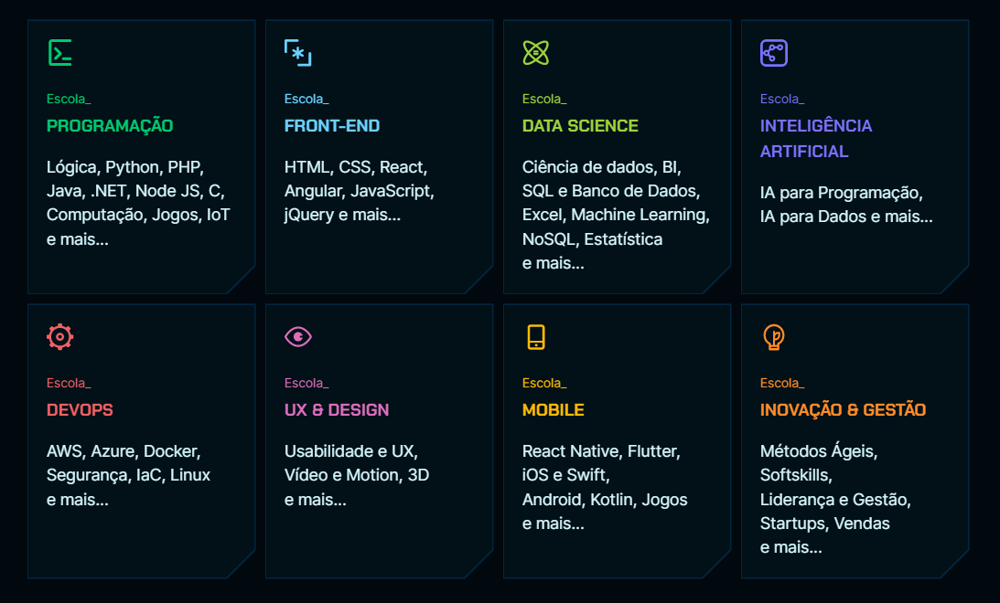

Nossa História
Head de educação e Co-fundador da Alura
CEO e Co-fundador da Alura
A alura começou como plataforma online para a escola presencial de tecnologia caelum, que hoje faz parte do ecossistemas de empresas da alura
A plataforma criou forma quando os fundadores Paulo Silveira e Guilherme Silveira perceberam que havia uma grande demanda de alunos que gostariam de estudar a distência, seja por estar no conforto de sua residência, por gestão de tempo e outros motivos que fazem milhares de alunos escolherem a educação a distância
Hoje, a missão da Alura é mais que formar alunos a distância, mas fazer com que as pessoas invistam o seu tempo ao máximo naquilo que acreditamos ser benéfico, assim transformando a vida pessoal e profissional de seus alunos através da educação e da tecnologia.
Através da diversidade, desenvolvimento, colaboração, dedicação e encanto, a Alura busca um papel importantissimo na vida de seus alunos, fazendo parte do ponta pé inical na carrreira de quem quer trabalhar com tecnologia.
Temos aumentado nosso território na web, estamos hoje não somente nas nossas próprias plataformas, mas nas principais redes sociais no mercado e nossos alunos estão engajados na educação até mesmo em plataformas “lado b”
Portfólio
A Alura oferece cursos de programação, data science, devops, ux & design, mobile, inovação & gestão e inteligência artificial. 
Os alunos aprendem tudo sobre tecnologia com uma comunidade engajada em aprender e ensinar, alcançamos diversos alunos em diversas plataformas, criando conteúdos em aúdio, vídeo, redes socias e etc.
Qual o público alvo da Alura? Amantes de tecnologia que querem mudar de carreira ou estão começando sua jornada.
Comunicação empresarial
A comunicação está somente presente na internet, com menos foco em eventos presenciais, seja de tecnologia ou ao que tange a área.
As possíveis soluções para esse problema são: criar também eventos presenciais, mesmo que nos principais centros, para falar de tecnologia e oferecer palestras com grandes nomes nacionais na área de tecnologia.
Notícia
Alura anuncia curso gratuito sobre inteligência artificial com 90 mil vagas
Devido o aumento da utilização da inteligência artificial pelas empresas e com o intuito de promover a educação em tecnologia, a Alura anunciou a abertura das inscrições para a primeira edição da imersão em inteligência artificial. O curso gratuito conta com 90 mil vagas e ocorrerá de 19 a 23 de junho.
O programa consiste em cinco aulas práticas para aqueles que desejam se preparar para o mercado. Durante o processo de aprendizado, os alunos terão a oportunidade de esclarecer dúvidas com seus colegas e instrutores em uma comunidade no Discord. Entre os instrutores estarão Guilherme Silveira, cofundador da Alura, CIO da escola e especialista em IA, além de Paulo Silveira, também cofundador e CEO da empresa, e Sérgio Lopes, CTO da companhia.
De acordo com Guilherme Silveira, o objetivo da imersão é capacitar os participantes para se tornarem profissionais capazes de tomar decisões embasadas sobre a aplicação responsável da IA. "Queremos explorar quantas oportunidades e avanços podemos gerar com essas ferramentas, auxiliando especialistas a se adaptarem às mudanças constantes do mercado", falou em comunicado.
O cronograma do curso iniciará com uma aula sobre IA generativa e como utilizar prompts profissionalmente com o modelo GPT para análise e categorização de críticas de filmes. A segunda aula será focada na engenharia de prompts, discutindo formas de aprimorá-los para obter respostas mais eficientes da IA, enquanto a terceira aula explorará a automação da IA com planilhas, mostrando como obter informações de diversas plataformas e utilizá-las para criar relatórios úteis.
Na sequência, a quarta aula introduzirá o conceito de "No-Code" e ensinará o uso de ferramentas como o Zapier para automatizar ainda mais tarefas, incluindo a classificação automática de tickets de e-mail. Por fim, a quinta aula será uma aula bônus, em que uma abordará o poder da IA para impulsionar carreiras em marketing, controle de qualidade e geração de imagens, e a outra se concentrará na criação de um bot de IA para responder perguntas em plataformas específicas, como Slack e Discord.
O cronograma do curso também inclui três transmissões ao vivo, sendo uma delas integrada a um episódio do "Hipsters: Fora de Controle", um spin-off dedicado à IA do principal podcast de tecnologia do país, "Hipsters Ponto Tech". As outras transmissões abordarão os temas "Descubra como a IA pode impactar seu trabalho e sua vida" e "Próximos passos em IA".
As inscrições para a Imersão de Inteligência Artificial Aplicada estarão abertas a partir de 29 de maio e encerrarão em 18 de junho.
Veja a notícia original